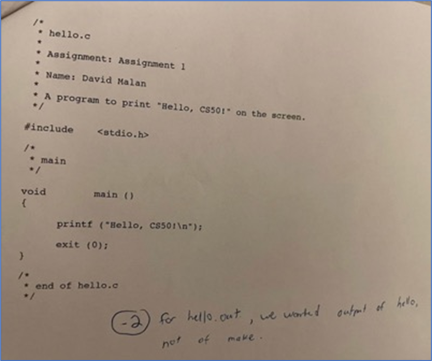

Pensamiento Computacional
Introducción
El pensamiento computacional es una disciplina que ha sido definida como "el conjunto de procesos de pensamiento implicados en la formulación de problemas y sus soluciones, de manera que dichas soluciones sean representadas de una forma que puedan ser efectivamente ejecutadas por un agente de procesamiento de información", entendiendo por esto último a un humano, una máquina o una combinación de ambos.
El ser humano piensa y se comporta como tal siguiendo una secuencia lógica de acciones.
¿Qué es el pensamiento computacional?
Definición
El pensamiento computacional es una habilidad fundamental en la programación y en la resolución de problemas en general que se basa en la aplicación herramientas básicas como la lógica, el razonamiento, la descomposición, la abstracción, el reconocimiento de patrones y la algoritmia.
Está ampliamente aceptado que estas herramientas sirven a cualquier persona que deba resolver problemas, con lo cual el pensamiento computacional deviene en una técnica de resolución de problemas.
Si bien el pensamiento computacional no necesariamente requiere del uso de computadoras, la programación de computadoras se convierte en su complemento ideal:
- Permite comprobar, mediante la codificación de un algoritmo en un programa, la validez de la solución encontrada al problema, de manera sencilla y prácticamente inmediata.
- Programar incentiva la creatividad, la capacidad para la auto organización y el trabajo en equipo.
- La programación constituye un recurso habitual del trabajo en el campo profesional de la ingeniería.
¡Bienvenidos y Bienvenidas!
¡Esta materia es más que programación de computadoras!
Resulta que la informática se trataba menos de programación que de resolución de problemas. De hecho, ¡esta materia trata sobre la resolución de problemas de una manera que es extremadamente enriquecedora!
Es probable que tomes la resolución de problemas que aprendas aquí y que la apliques instantáneamente a tu trabajo más allá de esta clase e incluso a tu vida en general.
Sin embargo, ¡no será fácil! Estarás “bebiendo de la manguera” del conocimiento durante cada clase. Y aunque puede haber frustración por sentirse atascado o cometer errores, también habrá una gran sensación de gratificación y orgullo por hacer que algo funcione o completar alguna tarea. Te sorprenderás de lo que podrás lograr semana a semana.
Entonces, se trata mucho más de que avances a nivel personal que de alcanzar algún nivel estandarizado y generalizado a nivel colectivo. Lo que finalmente importa no es tanto dónde terminas en relación con tus compañeros de clase, sino dónde terminas en relación contigo mismo cuando comenzaste.
La consideración más importante es que te des el tiempo que necesites para aprender a lo largo del año. Todo el mundo aprende de manera diferente.
Si algo no funciona bien al principio, debes saber que con el tiempo irás adquiriendo más conocimientos y mejorando tus habilidades para resolver todos los problemas que se presenten.
Por ejemplo, un programa que calcula el cuadrado de un número podría verse así:
| Python | |
|---|---|
Aunque este programa (escrito en un lenguaje de programación en lugar de un lenguaje natural como el castellano) parece críptico al principio, pueden pasar semanas o meses antes de que podamos comprender los conceptos principales de programación e incluso aprender nuevos lenguajes.
Definición
Seguramente te estés preguntando que es críptico: un lenguaje críptico en programación es un tipo de lenguaje de programación diseñado para ser extremadamente difícil de entender o leer, generalmente con el objetivo de complicar la comprensión del código fuente por parte de otras personas.
Así que no te preocupes, con tiempo y práctica irás sintiendo al lenguaje de programación como algo menos críptico y más natural, ¡Esa es la idea!
Pero ahora volvamos a la definición de pensamiento computacional aplicado al ejemplo anterior:
Lógica
Se refiere a la capacidad de razonar sistemáticamente y de resolver problemas de manera efectiva basadas en condiciones establecidas. En programación, la lógica se utiliza para diseñar algoritmos, estructurar código y tomar decisiones basadas en condiciones específicas.
| Python | |
|---|---|
En este programa, la lógica se utiliza para calcular el cuadrado de un número. ¿Cómo?
-
Se define una función llamada
calcular_cuadradoque toma un argumento llamadonumero. Esta función devuelve el cuadrado denumero(es decir,numero * numero). -
Luego, el programa solicita al usuario que ingrese un número entero. La función
inputrecoge la entrada del usuario como una cadena, por lo que se utiliza la funciónintpara convertir esa entrada en un número entero. -
Finalmente, el programa imprime el cuadrado del número ingresado por el usuario. Utiliza la función
calcular_cuadradopara calcular el cuadrado del número y luego lo imprime en la consola con una cadena formateada.
Por lo tanto, la lógica del programa es solicitar un número al usuario, calcular el cuadrado de ese número y luego imprimir el resultado.
Razonamiento
Se refiere a la capacidad de pensar de manera lógica y estructurada para resolver problemas. En el contexto de la programación, el razonamiento se utiliza para entender cómo y por qué un algoritmo o un fragmento de código funciona de la manera en que lo hace.
| Python | |
|---|---|
En este programa, el razonamiento se podría aplicar para entender cómo la función calcular_cuadrado toma un número como entrada y devuelve el cuadrado de ese número. También se podría usar para entender cómo el programa recibe una entrada del usuario, la pasa a la función calcular_cuadrado, y luego imprime el resultado. ¿Cómo?
-
Se define una función
calcular_cuadradoque toma un número como argumento. Esta función se encarga de realizar una operación específica, que es calcular el cuadrado de un número. La razón para definir esta función es encapsular la lógica de calcular el cuadrado de un número, lo que permite reutilizar esta lógica en cualquier parte del código simplemente llamando a la función. -
Luego, el programa solicita al usuario que ingrese un número. Se utiliza la función
inputpara recoger la entrada del usuario y luego se convierte esa entrada a un número entero con la funciónint. La razón para hacer esto es que la funcióninputsiempre devuelve una cadena, pero necesitamos un número para poder calcular su cuadrado. -
Finalmente, el programa imprime el cuadrado del número ingresado por el usuario. Se utiliza una cadena formateada para generar un mensaje que incluye el número original y su cuadrado. La razón para hacer esto es proporcionar una salida que sea fácil de entender para el usuario.
Por lo tanto, el razonamiento detrás de este código es utilizar una función para encapsular la lógica de calcular el cuadrado de un número, convertir la entrada del usuario a un número y proporcionar una salida que sea fácil de entender para el usuario.
Aunque la lógica y el razonamiento están estrechamente relacionados en el pensamiento computacional, no son exactamente lo mismo. Mientras que la lógica se refiere a las reglas y estructuras que guían nuestras decisiones y pensamientos, el razonamiento es el proceso de usar esas reglas y estructuras para llegar a una conclusión o resolver un problema.
Descomposición
Es el proceso de dividir un problema complejo en partes más pequeñas y manejables, que pueden ser resueltas de manera más fácil para llegar a una solución de manera exitosa. Cada una de estas partes más pequeñas puede ser un problema en sí mismo que requiere una solución.
Al descomponer un problema, puedes concentrarte en una sección a la vez, lo que puede hacer que el problema sea más fácil de entender y resolver.
| Python | |
|---|---|
En este programa, la descomposición se puede ver en cómo el problema general de calcular el cuadrado de un número se divide en tareas más pequeñas:
- Solicitar al usuario que ingrese un número.
- Convertir la entrada del usuario a un número entero.
- Calcular el cuadrado del número utilizando la función
calcular_cuadrado. - Imprimir el resultado.
Cada una de estas tareas es una descomposición del problema general. ¿Cómo?
-
Definición de la función
calcular_cuadrado(líneas 1-2): Esta es la primera parte del problema. La función toma un número como argumento y devuelve el cuadrado de ese número. Esta es una tarea individual que se ha aislado en su propia función. -
Solicitud de entrada del usuario (línea 4): Esta es la segunda parte del problema. El programa solicita al usuario que ingrese un número entero. La entrada del usuario se recoge como una cadena, por lo que se utiliza la función
intpara convertirla en un número entero. -
Impresión del resultado (línea 6): Esta es la tercera y última parte del problema. El programa calcula el cuadrado del número ingresado por el usuario utilizando la función
calcular_cuadradoy luego imprime el resultado en la consola.
Por lo tanto, el problema general de calcular el cuadrado de un número ingresado por el usuario se ha descompuesto en tres partes más pequeñas: definir la función de cálculo, recoger la entrada del usuario e imprimir el resultado.
Abstracción
Es el proceso de simplificar un problema complejo al ignorar los detalles menos relevantes y centrarse en los aspectos más importantes. En programación, la abstracción a menudo implica la creación de funciones o clases que encapsulan ciertos detalles y proporcionan una interfaz simple para realizar una tarea.
| Python | |
|---|---|
En este programa, la función calcular_cuadrado es un ejemplo de abstracción. Esta función toma un número y devuelve su cuadrado, ocultando los detalles de cómo se realiza este cálculo.
No necesitas entender cómo funciona internamente para usarla. Todo lo que necesitas saber para usar la función es que toma un número y devuelve su cuadrado.
Además, la línea que solicita la entrada del usuario con la sentencia numero = int(input("Ingrese un número entero: ")) también es una forma de abstracción. Oculta los detalles de cómo se recoge la entrada del usuario y cómo se convierte esa entrada a un número entero.
Por lo tanto, la abstracción en este código permite centrarse en lo que hace el código (calcula el cuadrado de un número y lo imprime) en lugar de cómo lo hace.
Reconocimiento de patrones
Es la habilidad de identificar tendencias, regularidades o recurrencias en datos o problemas. En programación, esto puede implicar identificar y utilizar patrones en el código para simplificar la solución de un problema.
| Python | |
|---|---|
En este programa, el reconocimiento de patrones puede no ser inmediatamente evidente porque el código es bastante simple y no contiene estructuras repetitivas obvias. Sin embargo, aquí hay algunas formas en que podríamos interpretar el reconocimiento de patrones:
-
Uso de funciones para tareas específicas: La función
calcular_cuadradose utiliza para realizar una tarea específica: calcular el cuadrado de un número. Este es un patrón que se utiliza a menudo en programación: definir funciones para tareas específicas que se pueden reutilizar en diferentes partes del código. Es decir que cada vez que necesitas calcular el cuadrado de un número, puedes usar esta función en lugar de escribir el cálculo manualmente. Este es un patrón que puedes reconocer y utilizar para simplificar tu código. -
Patrón de entrada-procesamiento-salida: Este código sigue un patrón común en programación conocido como el patrón de entrada-procesamiento-salida. Primero, el programa recoge una entrada del usuario (ingreso por teclado), luego procesa esa entrada (calcula su cuadrado) y finalmente produce una salida (imprime el resultado).
-
Uso de la función print para la salida: Este código utiliza la función
printpara mostrar la salida al usuario. Este es un patrón común en programación: usarprintpara la salida.
Por lo tanto, aunque este código es bastante simple, todavía contiene algunos patrones que son comunes en programación.
Algoritmia
Se refiere a la capacidad de definir una serie de pasos ordenados y finitos (que tienen fin, no son infinitos) para resolver un problema o realizar una tarea. En programación, un algoritmo es una lista de instrucciones que un programa sigue para completar una tarea específica.
Un algoritmo es esencialmente un plan o una receta para resolver un problema.
| Python | |
|---|---|
En este programa, el algoritmo se puede ver en la secuencia de operaciones que se realizan:
- Solicitar al usuario que ingrese un número.
- Convertir la entrada del usuario a un número entero.
- Calcular el cuadrado del número utilizando la función calcular_cuadrado.
- Imprimir el resultado.
Cada uno de estos pasos es una parte del algoritmo que tu programa sigue para calcular el cuadrado de un número. ¿Cómo sería entonces el algoritmo?
-
Definir la función
calcular_cuadrado: Esta función toma un número como argumento y devuelve el cuadrado de ese número. -
Solicitar la entrada del usuario: El programa solicita al usuario que ingrese un número entero. La entrada del usuario se recoge como una cadena, por lo que se utiliza la función
intpara convertirla en un número entero. -
Calcular el cuadrado del número: El programa utiliza la función
calcular_cuadradopara calcular el cuadrado del número ingresado por el usuario. -
Imprimir el resultado: Finalmente, el programa imprime el cuadrado del número en la consola.
Por lo tanto, el algoritmo de este código es una serie de pasos que se siguen para solicitar un número al usuario, calcular el cuadrado de ese número y luego imprimir el resultado.
A simple vista, la descomposición y la algoritmia parecen lo mismo, pero no lo son. La descomposición es una estrategia que se utiliza para entender un problema, mientras que la algoritmia es una estrategia que se utiliza para resolver un problema. A menudo, después de descomponer un problema, usarías la algoritmia para crear un plan para resolver cada parte más pequeña.
Conclusiones
¡No temas! ERES el programador. Escribe el código. Ejecuta el código.
¡Para programar, ¡Debes “hablar” y "escribir" en lenguaje de programación!
Como dijimos, puede haber frustración por sentirse atascado o cometer errores, pero también habrá una gran sensación de gratificación y orgullo por hacer que algo funcione o completar alguna tarea.
De hecho, David Malan (profesor titular de la cátedra de Computer Science CS50 en la Universidad de Harvard, Estados Unidos) perdió dos puntos en su primera tarea por no seguir todas las instrucciones correctamente. Y hoy, sin embargo, es una autoridad reconocida en la materia.

El código de la imagen es casi correcto para imprimir en pantalla en C, pero le falta incluir la biblioteca
stdlib.h, que es necesaria para la funciónexit(0);.Además, nota que es más común usar
int main()en lugar devoid main(). La funciónint main()debería devolver un entero al final (generalmente 0 para indicar éxito), que se usa como el estado de salida del programa. En el caso del profesor Malan, utilizóexit(0), que también termina el programa con un estado de 0, por lo que no está mal, pero es menos común.Todo lo explicado en este ejemplo por ahora no es importante. Solo te lo cuento para que veas que si al principio la cosa es complicada, con el correr del tiempo verás como en realidad no lo es.
Para tu tranquilidad, dos tercios de los estudiantes de CS50 en Harvard nunca antes habían tomado un curso de informática como (casi) seguramente tu tampoco lo hiciste. Así que a no desanimarse y a meter todas las energías.